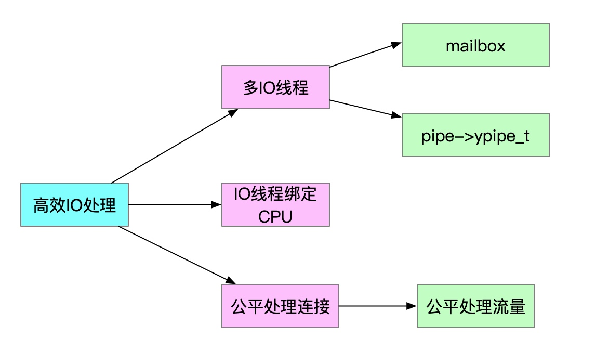

性能
- RTT
- TPS
- 关闭Nagle算法，关闭网卡中断汇聚在一个cpu，提高IO吞吐能力上，开启网络接口的多队列功能，这样，每个队列就可以用不同的中断号，调度到不同 CPU 上执行
- 区别大小消息，零拷贝 92字节为临界点
- 批量发送和接收消息
- 非同步零数据CPU迁移的并发编程 通过管道
- 无锁算法
线程间共享数据
- send(cmd)
- socket
- socketpair
- 信号 pipe
- eventfd
架构

- engine负责对底层事件发送和接收解码和内核打交道，依赖poller
- poller 对epoll进行封装
- pipes inbound 和 outbound 读写两个管道
- mailbox就是对pipe的封装，两个线程之间发送数据
- session 管理每个连接，管理客户端连接
- session和engine绑定到每个io thread
- zmq_socket可以对应多个客户端，通过算法将session和engine绑定到io_thread
- poller监听到数据会把socketfd发给listener处理，listener会创建engine和session
- 读事件发生poller->engine->内核拷贝数据->session->inbound->api接口读取数据
- 写事件是engine从session中读取消息
消息内存管理
- 短消息vsm直接初始化在栈上
- zmq_msg_t->msg_t
- move 就是删除引用计数
union {
struct {
metadata_t *metadata;
unsigned char unused [msg_t_size - (8 + sizeof (metadata_t *) + 2)];
unsigned char type;
unsigned char flags;
} base;
struct {
metadata_t *metadata;
unsigned char data [max_vsm_size];
unsigned char size;
unsigned char type;
unsigned char flags;
} vsm;
struct {
metadata_t *metadata;
content_t *content;
unsigned char unused [msg_t_size - (8 + sizeof (metadata_t *) + sizeof (content_t*) + 2)];
unsigned char type;
unsigned char flags;
} lmsg;
struct {
metadata_t *metadata;
void* data;
size_t size;
unsigned char unused
[msg_t_size - (8 + sizeof (metadata_t *) + sizeof (void*) + sizeof (size_t) + 2)];
unsigned char type;
unsigned char flags;
} cmsg;
struct {
metadata_t *metadata;
unsigned char unused [msg_t_size - (8 + sizeof (metadata_t *) + 2)];
unsigned char type;
unsigned char flags;
} delimiter;
} u;

- zmq_msg_move 做了一个引用计数
multipart message
- 小消息第一个字节是长度
- 大消息分多帧发送，最后一个帧发送空
- 超过一个字节的长度，帧第一个字节是0xffff，然后扩充到8个字节
- ZMQ_SNDMORE

动态调整批量发送
- outbound和inbound是收发队列
- out_batch_size = 8192 bytes
- 有多条消息就合并，没有也立即发送
- 8192让tcp尽量有数据发送
- stream_engine
高效线程的IO
- IO密集型一般线程数目是CPU数目的两倍
- 计算密集型跟cpu数目一样 
- 统计流量的事情丢给用户
zmq::io_thread_t *zmq::ctx_t::choose_io_thread (uint64_t affinity_)
{
if (_io_threads.empty ())
return NULL;
// Find the I/O thread with minimum load.
int min_load = -1;
io_thread_t *selected_io_thread = NULL;
for (io_threads_t::size_type i = 0; i != _io_threads.size (); i++) {
if (!affinity_ || (affinity_ & (uint64_t (1) << i))) {
int load = _io_threads[i]->get_load ();
if (selected_io_thread == NULL || load < min_load) {
min_load = load;
selected_io_thread = _io_threads[i];
}
}
}
return selected_io_thread;
}
Mailbox
- eventfd 事件fd效果等同于socketpair,可以添加到epoll中来
- slot(mailbox)->io_thread对应数组某个位置
- socket线程和io_thread交换数据
- 通过mailbox命令让io_thread绑定poller,session,engine
- signaler_t make_fdpair -> eventfdj
- socket的mailbox和iothread中一一对应
- mailbox第一次send 1激活邮箱
- io_thread中的poller有处理mailbox中的signaler_t信号
- 然后poller中收到1后从管道中读数据
- signaler封装一个socketpair对
Mailbox发送消息流程

高效IO编程
- 高低水位HWM过载落盘 低水位从磁盘载入
- 大师级的线程池的设计